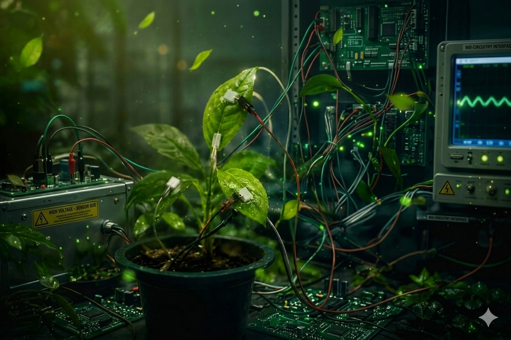
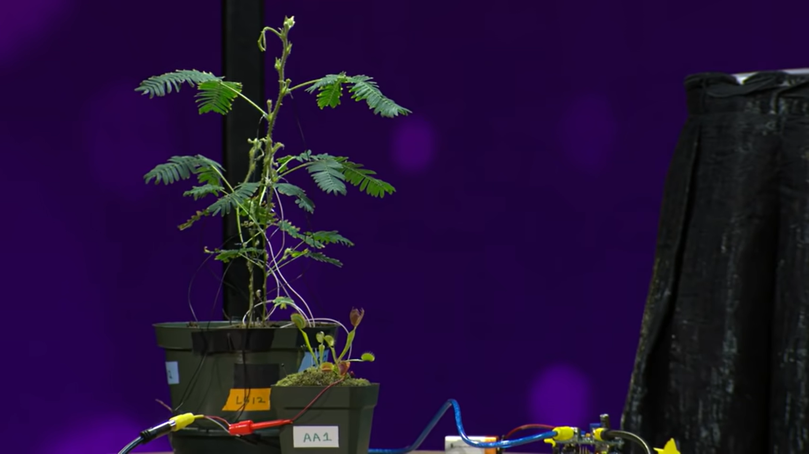

A next-generation intelligent agricultural monitoring platform that combines Artificial Intelligence, Machine Learning, Plant Bioelectrical Signals, Embedded Systems and IoT technologies for early stress, disease and nutrient deficiency detection before visible symptoms appear.
Building an AI-powered agricultural ecosystem capable of understanding plant health using bioelectrical signals before physical symptoms become visible.
This research introduces an advanced Artificial Intelligence based monitoring platform designed to acquire ultra-low-level plant electrical signals using high-sensitivity electrodes. The collected signals are processed through embedded hardware, machine-learning algorithms and cloud-assisted analytics to identify disease, environmental stress, nutrient deficiencies and abnormal plant behavior at an early stage. Unlike conventional monitoring methods, this system focuses on electrical activity generated naturally by plants. The project also investigates whether one strategically selected "Mother Plant" can represent surrounding plants within the same growing environment. The ultimate objective is to reduce pesticide usage, improve crop yield, lower farming costs and contribute to sustainable precision agriculture.
Deep learning models analyze plant electrical activity to detect disease, stress and nutrient deficiencies with high accuracy.
Ultra-sensitive signal acquisition from plants enables continuous, non-destructive monitoring of plant health.
ESP32-based wireless communication allows real-time remote monitoring from smartphones, tablets and computers.
Custom-designed embedded electronics perform high-speed acquisition, filtering and AI preprocessing for reliable measurements.
Classification and prediction models identify abnormal patterns before visual symptoms appear.
Integrating AI with precision farming technologies to improve food production while reducing environmental impact.
The development process of the AI-Based Plant Electrical Signal Monitoring System.
Concept development for monitoring plant bioelectrical signals using Artificial Intelligence.
Development of ultra-sensitive analog front-end, signal conditioning and ESP32 embedded hardware.
Machine learning algorithms for disease detection, stress prediction and nutrient deficiency analysis.
Collecting real plant electrical signals and validating AI prediction accuracy.
Research Modules
Hardware Components
AI Algorithms
Future Expansion Goals




Research papers, journals and future publications related to AI-powered plant electrical signal monitoring.
Status: Research In Progress
Journal: Future IEEE / Springer Submission
Download PaperArtificial Intelligence
Embedded Systems
Smart Agriculture
Machine Learning
Electronics Research